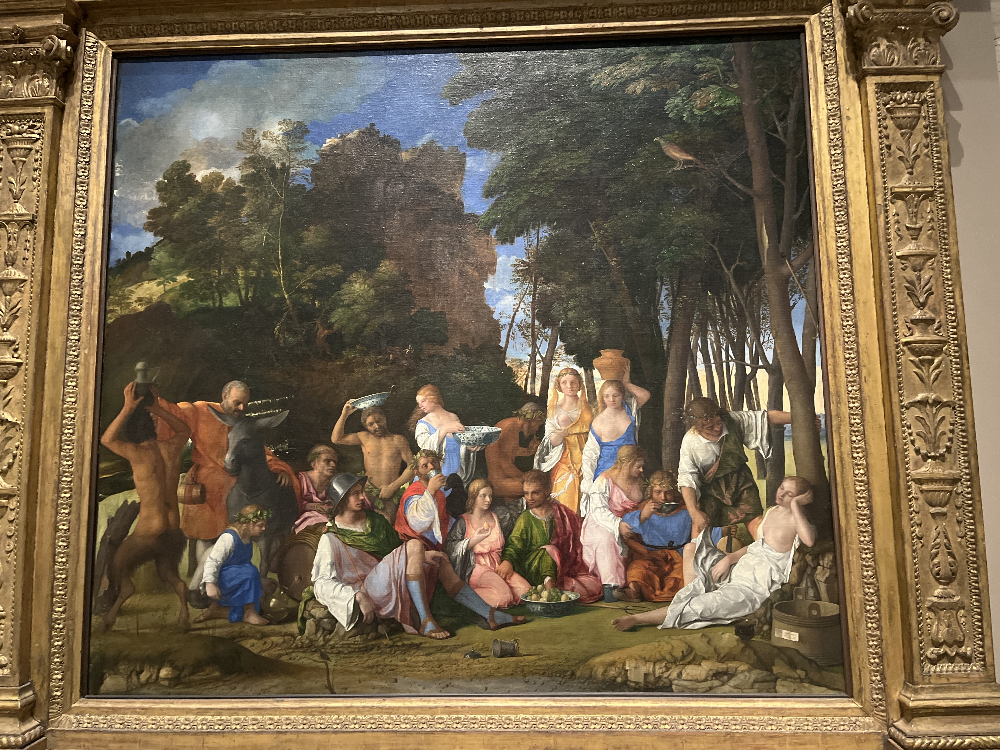
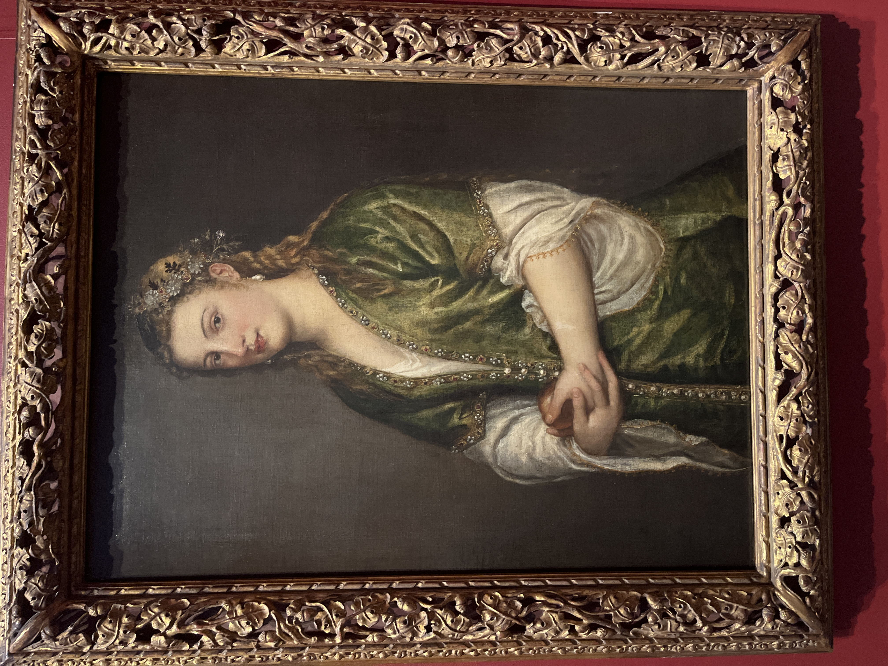
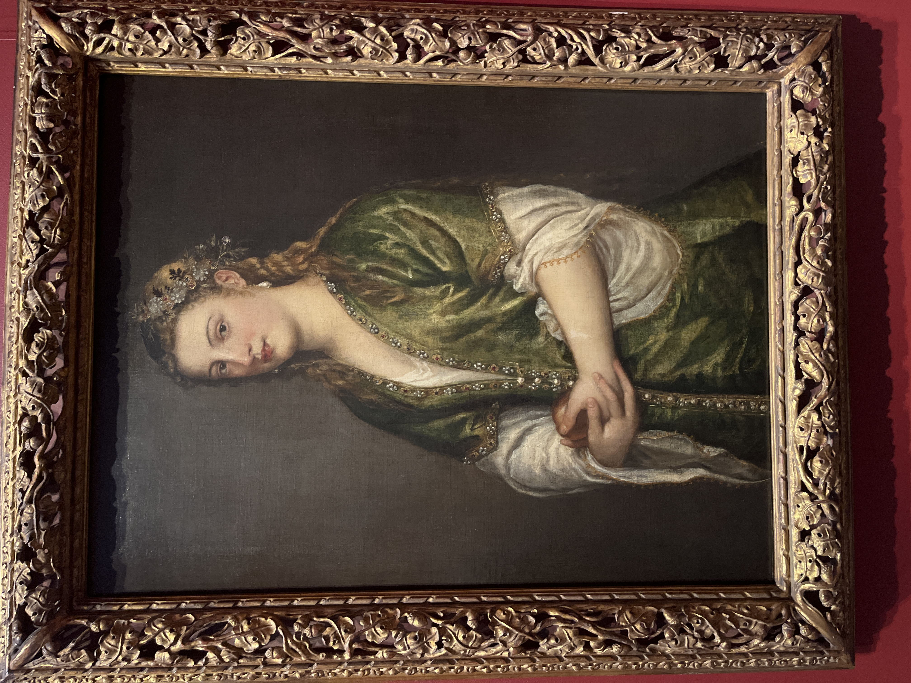

well，今天去National Gallery of Art，跟着tour guide一小时，讲的是 Italian renaissance。一开始没觉得有啥，后面越来越吃惊，这应该是我第一次看到Raphael和Da Vince的真迹了，稍微名气小一些的Giorgione和Botticelli也有个经典绘画。虽然有些难以相信，但这也是我第一次看到体香的真迹，好家伙，文艺复兴拉满了。

首先是文艺复兴的五个要素： 5 elements：Classism Greek ；Naturism ；Humanism；Perspective ；Knowing the artist.
中世纪艺术
中世纪艺术，来源于拜占庭艺术（注重灿烂的色彩、华丽的装饰，强调人物精神的表现，炫耀帝国和帝王的威严，把帝王表现为基督在尘世的代理人。wiki）主要是教堂起到教化的作用，来给贫民看。
其中blue或者Ryan往往着于圣母，昂贵而圣洁。绘画特点：木制，平板，宗教，苦难，halos，divine but not really，人少
Giotto
could be really baby and mom, the gesture are like really baby,手握住母亲手指。可惜忘记拍他的画了
Renaissance
人多起来，色彩丰富起来，服务对象从教廷变为wealth family （美第奇）
holy family to the side; magi be the middle
Animals plant: naturism,孔雀和一只鸟：美第奇家族，
一种圆形树：佛罗伦萨

Da Vince
first oil on panel （之前tempera蛋彩画)
Able to show more details, more smooth
shading transformation to color
atmosphere perspective
individual has thoughts
Leonardo da Vinci’s double-sided portrait of Ginevra de’ Benci is the only painting by the acclaimed artist in the Americas. Her pale features stand out against a dark juniper bush that alludes to her name: the Italian word for juniper is ginepro.
This type of lifelike portrait - set outdoors and showing most of the sitter’s face - breaks from earlier Renaissance works that feature sitters in austere profile.
Sandro Botticelli （维纳斯的诞生）
The adoration of the magi
五个元素
color， 构图稳定
single point perspective指向jesus

Raphael
Color is believable，harmony of colors
米开朗基罗影响 baby work out，身体结实，颜色舒服
trangle 构图。光线电光源
坐姿痛苦面容祥和

贝尼尼 Giovanni Bellini
自然光的运用
提香 titian
提香的早期作品受拉斐爾和米开朗基罗影响很深，以后他的作品比起文艺复兴鼎盛时期画家的作品，更重视色彩的运用，对后来的画家如鲁本斯和普桑都有很大的影响。他的作品构思大胆，气势雄伟，构图严谨，色彩丰富、鲜艳。
From insightful portraits to sensuous nudes, Titian also excelled at mythological scenes and meditative religious works.
His early paintings revel in a typically Venetian love of brilliant color, with thin layers of nearly translucent glazes combining to make complex tones. His more muted later works have mostly rich, warm hues, as in the portrait of the Venetian doge Andrea Gritti.
 

Giorgione 乔尔乔内
明暗
乔尔乔内的作品富有艺术感性和想象力，诗意的忧郁。是威尼斯绘画的代表。他最早使用明暗造型法及晕涂法[1]。
The Nativity (birth of Jesus Christ) is one of the most popular themes of the 15th and 16th centuries. Paintings of this subject had often focused on the three Magi (kings) worshiping before the infant Jesus. They were filled with grand processions of people and animals.
Giorgione did something strikingly different.
He moved the Holy Family to the right, shifting the focus to the humble shepherds in the center of the painting.
This emphasis on nature comes from Venetian poetry of the time, which celebrated rural life. With this quiet and intimate scene, Giorgione created a new type of Nativity painting.